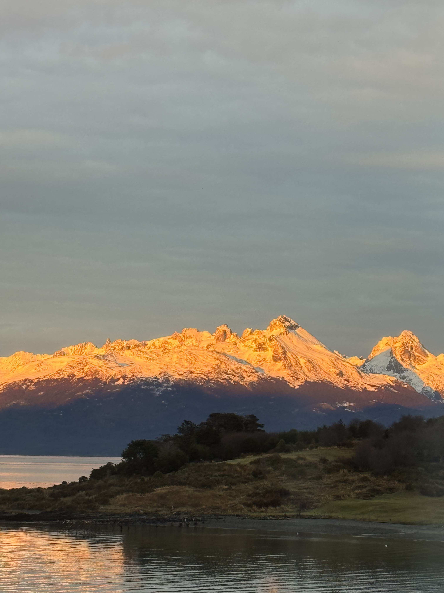
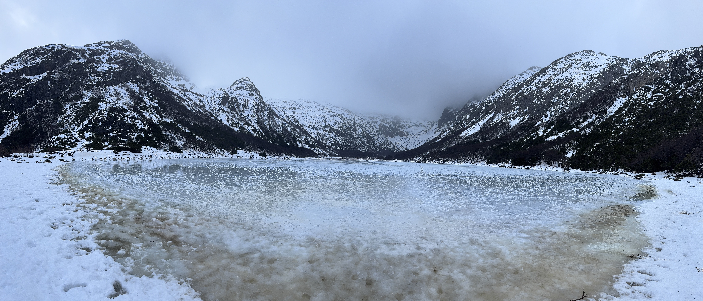
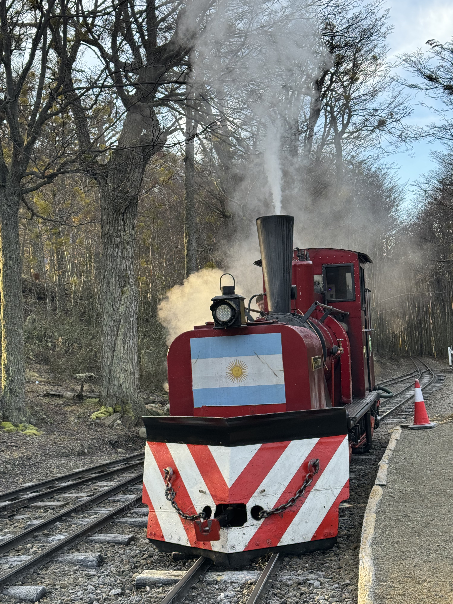
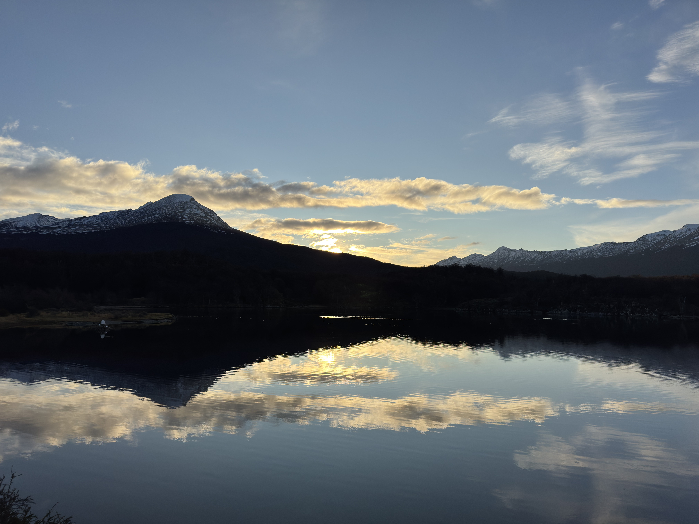

Ushuaia

Las montañas se iluminaron justo cuando empezaba a salir el sol.

Esta fue mi vista del Faro Les Éclaireurs desde el barco.

Llegar a la Laguna Esmeralda con nieve valió totalmente la pena.

Viajé en el Tren del Fin del Mundo durante el recorrido por Ushuaia.

El reflejo de las montañas en Bahía Lapataia parecía un espejo.